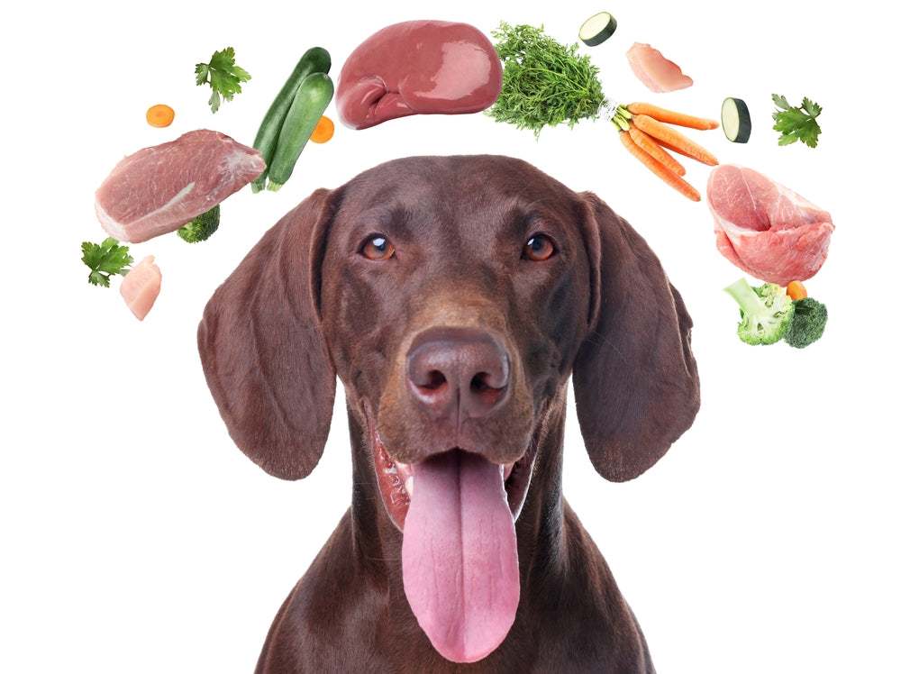
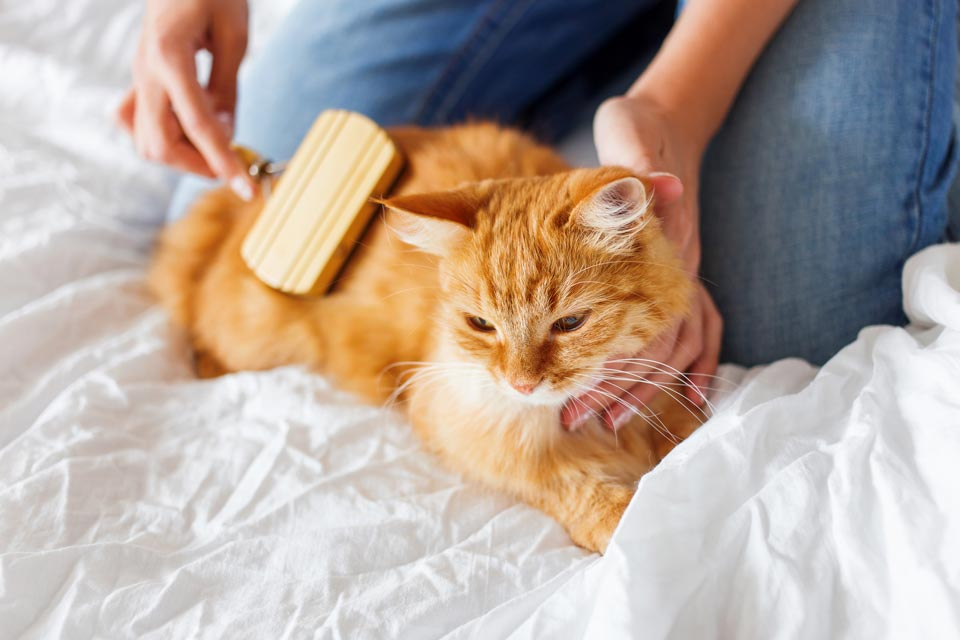
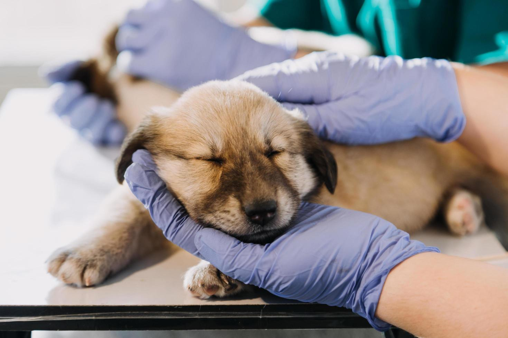

Nutrition Essentials
Dog Nutrition
- Feed high-quality protein (chicken, beef, fish)
- Include vegetables like carrots and green beans
- Use whole grains like brown rice
- Avoid toxic foods: chocolate, grapes, onions
- Provide fresh water at all times
Cat Nutrition
- High-protein diet (chicken, turkey, fish)
- Wet food helps with hydration
- Small, frequent meals
- Avoid dairy and raw fish
- Don't feed dog food to cats

Grooming Guide
Dog Grooming
- Brush coat weekly (daily for long-haired breeds)
- Bathe every 4-6 weeks with dog shampoo
- Trim nails monthly
- Clean ears weekly with vet-approved solution
- Brush teeth several times a week
Cat Grooming
- Brush short-haired cats weekly, long-haired daily
- Most cats self-clean; bathe only when necessary
- Trim nails every 2-3 weeks
- Clean ears monthly
- Wipe eyes gently with damp cloth
Exercise & Play
Dog Exercise
- 30 mins - 2 hours daily (varies by breed)
- Mix walks, fetch, and swimming
- Puzzle toys for mental stimulation
- Dog parks for socialization
- Adjust for age and health conditions
Cat Exercise
- 15-30 minutes active play daily
- Use wand toys, laser pointers
- Provide climbing structures
- Rotate toys to prevent boredom
- Food puzzles for mental exercise

Veterinary Care
Preventive Care
- Annual wellness exams
- Vaccinations as recommended
- Monthly flea/tick prevention
- Year-round heartworm prevention
- Regular dental checkups
Warning Signs
- Lethargy lasting >24 hours
- Loss of appetite
- Difficulty breathing
- Unusual lumps or swelling
- Persistent vomiting/diarrhea